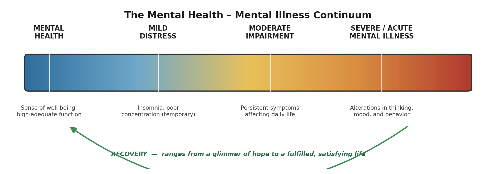
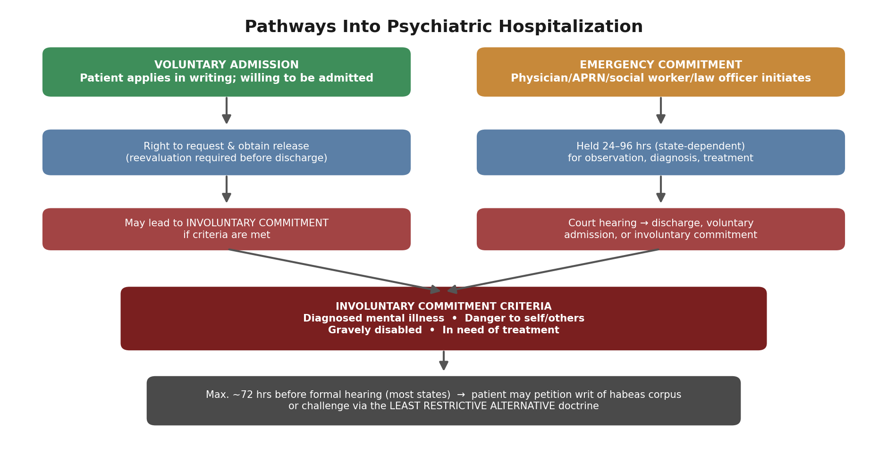
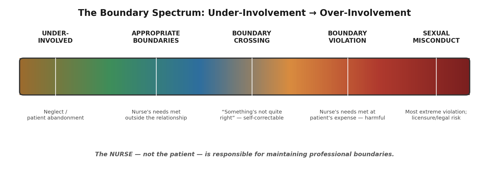
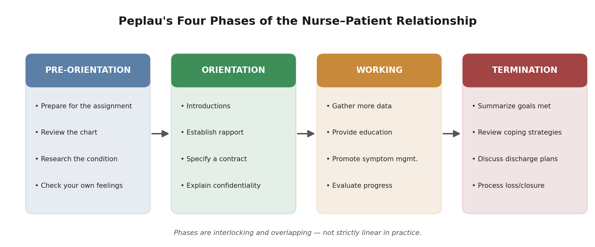

NUR202 — PSYCHIATRIC MENTAL HEALTH NURSING
Combined Review Study Guide
Chapters 1, 6 & 8
Mental Health/Mental Illness • Legal & Ethical Concerns • Therapeutic Relationships
September 14, 2026
WHY THIS DOCUMENT COMBINES THREE CHAPTERS This is a cross-topic review: Chapter 1 appeared in your Week 1 guide and Chapters 6 & 8 in your Week 2 guide. Today's class reviews them together, so this document is organized the same way — one reference you can use for today's session instead of flipping between two prior files. |
COURSE SLOs THIS SESSION TOUCHES ON Ch. 1 — SLO 1, 2: assessing physical/cognitive/psychosocial/cultural factors; foundations of critical thinking in the nursing process. Ch. 6 — SLO 7: legal and ethical issues affecting care of clients with situational stressors, maturational stressors, and mental illness. Ch. 8 — SLO 3, 6, 7, 8: therapeutic communication and the nurse-client relationship; recognizing collaborative behavior; boundary/legal awareness; and beginning to examine your own perceptions and biases. |
CHAPTER 1: Mental Health / Mental Illness
A basic understanding of mental health vs. mental illness — and what shapes the difference — underlies every assessment you'll make this semester. This chapter sets the vocabulary the rest of the course builds on.
Defining the Terms
Mental health: a state of well-being where a person can reach their potential, cope with normal life stressors, work productively, and contribute to their community.
Mental illness: refers to a psychiatric disorder with a diagnosis and significant dysfunction related to development, biology, or psychology (e.g., Alzheimer's disease — thinking impaired; depression — emotions affected; schizophrenia — behavior altered).
QUICK STATS 21% of American adults experience a mental illness in a given period. 24% of young adults (18–25) — the highest rate of any age group. 25% of Americans have lived with a serious mental illness (schizophrenia, bipolar disorder) at some point. 0.06% of adults and 1.2% of young adults have attempted suicide. |
The Mental Health Continuum
Mental health and mental illness are not an either/or — they fall along points of a single continuum. Mild impairment (insomnia, poor concentration) is usually temporary; the most severely affected individuals experience alterations in thinking, mood, and behavior. Recovery is possible at any point along this continuum.

Figure 1.1 — The mental health–mental illness continuum, with recovery as a bidirectional process.
Risk & Protective Factors
| Category | What It Covers | Examples |
|---|---|---|
| Individual characteristics | Inborn + learned traits; how a person manages thoughts, feelings, and stressors | Biology/genetics; resilience — the capacity to secure resources to support wellness |
| Socioeconomic circumstances | Immediate social surroundings, especially family, school, and peer groups | Family dynamics (can build confidence OR instill anxiety); access to clothing/food/shelter; education level |
| Environmental factors | Politics, culture, and access to services | Health care access, reimbursement policy, cultural norms about what counts as “illness” |
REFLECT Resilience isn't the absence of being affected by pressure — it's what a person does with it. Think of a stressor you've faced this semester: what resource (person, habit, skill) did you draw on? That's the same mechanism you'll be assessing for in patients. |
Culture Shapes What We Call “Illness”
Cultures differ not only in their views on mental illness, but in which behaviors get categorized as mental illness at all.
Example: “running amok” in parts of Southeast Asia describes a person (usually male) engaging in indiscriminate violent behavior — recognized there, not a standard Western category.
Example: anorexia nervosa is a recognized diagnosis in the U.S.; it is largely unheard of in some developing nations.
COMMON MISCONCEPTION Classification systems classify diseases, not people. The DSM-5 classifies diseases. Avoid stigmatizing labels (“he is a schizophrenic”) — use person-first language (“our patient suffers from schizophrenia”). Stigma is the belief that the whole person is flawed, leading to shunning, disgrace, and shame — it comes from treating psychiatric symptoms as under a person's personal control. |
Nature vs. Nurture: A Brief History
| Era / Theory | Core Idea | What Happened to It |
|---|---|---|
| Supernatural explanation | Extreme/unusual behavior caused by evil forces | Superseded as medicine developed |
| Germ theory (1800s) | A specific environmental agent caused the disease, same as infectious disease | Abandoned — researchers couldn't identify a causative agent (“there is no mania germ”) |
| Psychological theories | Mental illness = faulty psychological processes, correctable through insight/understanding | Dominated for a period; e.g., depression explored via childhood experience |
| Biological / psychopharmacological | Challenged by the development of Thorazine (originally an anesthesia drug found to calm agitation) — suggested a neurochemical basis | Current dominant model; supported by altered brain function/structure findings in schizophrenia, OCD, anxiety, depression |
There are still no specific biological tests (no MRI) to diagnose most psychiatric disorders — diagnosis remains primarily based on symptom presentation via the DSM-5.
Epidemiology: Key Terms
| Term | Definition |
|---|---|
| Incidence | The number of NEW cases of a disorder in a given population within a specific time period. |
| Prevalence | The TOTAL number of cases — new and existing — in a given population during a specific period, regardless of when the person became ill. |
| Comorbidity | The presence of two or more disorders in the same individual (e.g., schizophrenia is frequently comorbid with diabetes due to antipsychotic medication side effects). |
DSM-5 Classification Categories
| Category Group A | Category Group B |
|---|---|
| Neurodevelopmental Disorders | Eating Disorders |
| Schizophrenia Spectrum Disorders | Elimination Disorders |
| Bipolar/Related Disorders | Sleep/Wake Disorders |
| Depressive Disorders | Sexual Dysfunction |
| OCD | Gender Dysphoria |
| Trauma-related Disorders | Disruptive/Impulse-Control/Conduct Disorders |
| Dissociative Disorders | Substance-Related Disorders |
| Somatic Disorders | Neurocognitive Disorders |
| Paraphilic Disorders | Personality Disorders |
Social Influences Shaping Modern Mental Health Care
Consumer Movement & Mental Health Recovery (NAMI)
Decade of the Brain; Surgeon General's Report on Mental Health; Human Genome Project
President's New Freedom Commission on Mental Health; Institute of Medicine
BRAIN Initiative; Research Domain Criteria Initiative
QSEN (Quality & Safety Education for Nurses): patient-centered care, teamwork/collaboration, evidence-based practice, quality improvement, safety, informatics
MENTAL HEALTH PARITY Historically, insurers singled out psychiatric disorders for reduced reimbursement, yearly/lifetime coverage limits, limited hospital days, and higher copays — the equivalent of charging colon cancer patients more than other cancer patients. The Patient Protection and Affordable Care Act of 2010 addressed this gap. |
NCLEX-STYLE PRACTICE QUESTIONS — CHAPTER 1
1. A nursing instructor explains mental health to students. Which statement best describes mental health?
A) Complete absence of any stress or negative emotion
B) A state of well-being enabling a person to reach their potential, cope with normal stressors, work productively, and contribute to their community
C) A stable, unchanging personality
D) Freedom from all psychiatric diagnoses
2. A patient reports insomnia and poor concentration during one stressful week at work, both resolving within days. Where does this fall on the mental health continuum?
A) Mental illness — severe impairment
B) Mild distress with temporary impairment
C) Comorbidity
D) Moderate impairment requiring hospitalization
3. Which best defines resilience as it relates to mental wellness?
A) The complete absence of stress in one's life
B) The capacity to secure resources to support mental wellness, and to manage emotions, thoughts, and behaviors effectively
C) A personality trait some people have and others entirely lack
D) The ability to avoid all negative thoughts permanently
4. A nurse notes that a patient's limited financial resources are restricting access to therapy. This best illustrates which influence on the course of mental illness?
A) Genetic predisposition
B) Socioeconomic circumstances
C) Individual coping style
D) Neurotransmitter reuptake abnormalities
5. A nurse caring for a patient from Southeast Asia recalls that “running amok” illustrates:
A) A universally recognized DSM-5 diagnosis
B) That cultures differ not just in views on mental illness, but in which behaviors are categorized as mental illness at all
C) A form of intentional tort
D) Evidence that anorexia nervosa is a universal diagnosis
6. Which statement reflects the concept of “stigma” as it relates to mental illness?
A) The scientific classification of psychiatric disorders by symptom cluster
B) The belief that the overall person is flawed, leading to social shunning, disgrace, and shame
C) A biological marker found on MRI in patients with OCD
D) An evidence-based treatment approach
7. A student asks why Thorazine was significant to the history of psychiatric treatment. The best response is:
A) It was the first medication developed specifically for schizophrenia
B) It was originally developed as an anesthesia medication but was found to calm psychomotor agitation, challenging purely psychological explanations of mental illness
C) It proved the germ theory of mental illness
D) It permanently cured mania
8. A researcher counts the number of NEW cases of major depressive disorder diagnosed in a community during 2026. This researcher is measuring:
A) Prevalence
B) Incidence
C) Comorbidity
D) Epidemiology as a whole
9. A new nursing student says, “My patient is schizophrenic.” The instructor should explain that:
A) This is acceptable clinical terminology
B) The DSM-5 classifies diseases, not people — person-first language avoids stigmatizing labels
C) Schizophrenia is not a DSM-5 diagnosis
D) Only physicians may use diagnostic terminology
10. Which legislation addressed insurers assigning higher copayments and stricter visit limits specifically to psychiatric diagnoses compared to other medical diagnoses?
A) HIPAA
B) The Patient Protection and Affordable Care Act of 2010 (mental health parity)
C) The Human Genome Project
D) The Research Domain Criteria Initiative
ANSWER KEY & RATIONALES — CHAPTER 1
1. B — Mental health is a state of well-being that allows a person to reach their potential, cope with normal life stressors, work productively, and contribute to the community — not the absence of stress.
2. B — Mild impairment (insomnia, poor concentration) is usually temporary and sits toward the mental-health end of the continuum, distinct from the persistent alterations in thinking, mood, and behavior seen in mental illness.
3. B — Resilience does not mean a person is unaffected by pressure — it means they are capable of managing their emotions, thoughts, and behaviors and don't engage in self-defeating patterns.
4. B — Socioeconomic status determines the resources available to support mental illness and affects basic needs — a social/environmental influence, distinct from individual biological characteristics.
5. B — Cultures differ in what they define as sickness or wellness; “running amok” and the near-absence of anorexia nervosa diagnoses in some countries both show that mental illness is partly culturally defined.
6. B — Stigma stems from the misconception that psychiatric disorders are “all in the head” and under personal control — it is the belief that the whole person is flawed.
7. B — Thorazine was developed for anesthesia; its calming effect on agitation helped shift focus back toward biological/neurochemical explanations of mental illness.
8. B — Incidence = new cases within a given time period. Prevalence = total cases (new + existing) regardless of onset date. Comorbidity = two or more co-occurring disorders.
9. B — A common misconception is that classification systems classify people; the DSM-5 classifies diseases. Nurses should use person-first language to avoid stigmatizing labels.
10. B — Mental health parity legislation, culminating in the 2010 ACA, addressed insurers historically singling out psychiatric disorders for reduced reimbursement, visit limits, and higher copays.
CHAPTER 6: Legal and Ethical Concerns
Patients in psychiatry experience alterations in thought, mood, and/or behavior that can impact their decision-making about their own care — which is exactly why legal protections and clear standards matter more here than in most other specialties.
Pathways Into Hospitalization
| Admission Type | Definition | Key Features |
|---|---|---|
| Voluntary | Patient applies in writing for admission | Patient must understand the need for treatment and be willing; right to request/obtain release; reevaluation required before discharge |
| Involuntary commitment | Court-ordered admission without the patient's approval (“assisted inpatient treatment”) | Criteria: diagnosed mental illness + danger to self/others OR gravely disabled OR in need of treatment; state laws vary |
| Emergency commitment | Temporary/emergency admission for someone too confused or ill to decide for themselves | Initiated by MD, APRN, social worker, or law officer; held 24–96 hrs depending on state; ends in court hearing |

Figure 6.1 — How a patient moves from admission through to a possible involuntary commitment.
NEW YORK NOTES A panel review + writ of habeas corpus process exists in many states but NOT in New York. Most states cap involuntary commitment at ~72 hours before a formal hearing is required. Least restrictive alternative doctrine: patients can challenge hospitalization if a less-restrictive option (e.g., outpatient treatment) would work — providers must take the least drastic action to achieve the treatment goal. |
Patient Rights Under the Law
| Right | What It Means |
|---|---|
| Right to treatment | Especially critical for involuntarily admitted patients — liberty cannot be taken without providing care |
| Freedom from excessive/unnecessary medication | Medication use must be clinically justified |
| Privacy and dignity | Baseline standard regardless of admission status |
| Least restrictive environment | Same doctrine used to challenge hospitalization itself |
| Access to attorney, clergy, private providers | Cannot be denied outside representation/support |
| Freedom from non-consented lobotomy, ECT, etc. | Fully informed consent required for invasive treatments |
Right to Refuse Treatment — and Its Override
Patients can withhold or withdraw consent at any time, even involuntarily admitted — verbally or in writing. In a true emergency (imminent harm to self/others), facilities can medicate without a court hearing. Outside an emergency, medicating over a patient's objection requires a court hearing AND all of the following:
OVERRIDE CRITERIA — ALL MUST BE MET 1. The person has a serious mental illness. 2. Functioning is deteriorating, and/or the person is exhibiting threatening behavior. 3. The benefits of treatment outweigh the harm. 4. The person lacks the capacity to make a reasoned treatment decision. 5. Less-restrictive services have been found inadequate. |
Informed Consent, Capacity & Competency
Informed consent must cover:
| Required Element |
|---|
| The nature of the problem/condition |
| The nature and purpose of the proposed treatment |
| Risks and benefits of that treatment |
| Alternative treatment options |
| Probability the proposed treatment will succeed |
| Risks of NOT consenting to treatment |
The MD is legally responsible for obtaining informed consent; the RN provides education. Implied consent occurs in routine care (e.g., patient extends their arm for an injection) — the more intrusive/risky the procedure, the greater the need for explicit informed consent.
| Capacity | Competency |
|---|---|
| A person's ABILITY to make an informed decision — can fluctuate hour to hour | A LEGAL term for the degree of mental soundness needed to make decisions — determined via formal legal proceeding |
| Assessed clinically (“Does the patient have capacity to consent to ECT?”) | Patients are presumed competent until declared otherwise by a court |
Guardian selection order (if a patient is declared incompetent):
1. Spouse/partner → 2. Adult children/grandchildren → 3. Parents → 4. Adult siblings → 5. Adult nieces/nephews → court-appointed volunteer if none available
Psychiatric advance directives (prepared while well) can specify: preferred physician/therapist, a designated decision-maker, medication preferences, consent/refusal of ECT or facility admission, and individuals who should NOT visit.
Restraint & Seclusion
| Term | Definition |
|---|---|
| Restraint | Any mechanical/physical device or holding that prevents/reduces movement; side rails count if used to prevent exiting bed; medications not indicated for the condition = chemical restraint |
| Seclusion | Confining a patient alone and preventing them from leaving — even an unlocked door counts if the patient is told they cannot leave. Limited to patients demonstrating violent/self-destructive behavior. |
| Time-out | VOLUNTARY — the patient chooses/accepts spending time alone. Not the same as seclusion. |
R/S RULES TO KNOW Restraint and seclusion CANNOT be used simultaneously. R/S orders are NEVER written PRN. In NY: RNs may never take a verbal order for R/S — the MD must examine the patient and write the order. RN has 30 minutes to obtain the written order. Time limits: Adults (18+) = 4 hrs • Adolescents (13–17) = 2 hrs • Children (≤12) = 1 hr. Continuous (1:1) observation + reassessment every 15 minutes; physical complaints always override psychiatric complaints while in R/S. Restraints are removed limb by limb, crosswise (e.g., right arm → left leg → left arm → right leg). |
Confidentiality
Only the patient can waive the legal privilege of confidentiality — discussions in public places (elevators, hallways) should be completely avoided, even without naming the patient.
HIPAA legally protects a patient's right to confidential treatment records; confidentiality continues after death.
If police want a patient for suspected criminal activity, you are still obligated to protect privacy — do not let police onto the unit (especially if armed); notify your supervisor.
In court, the RN is NOT covered under confidentiality of professional communications the way physician-patient or attorney-client privilege is.
Exceptions to confidentiality:
| Exception | What It Requires |
|---|---|
| Duty to warn/protect third parties | If a patient presents a danger of violence to a specific, identifiable person, the provider must assess/predict the danger, identify the victim, and take appropriate protective action (warn the victim, family, or police). Staff nurses report threats to the treatment team; advanced practice/private-practice providers must warn the endangered party themselves. |
| Child/elder abuse reporting | All 50 states + DC have mandated reporting laws for child abuse; most states also require reporting elder/dependent adult abuse (65+). Federal law takes precedence over state law. |
Torts & Standards of Care
| Intentional Torts | Unintentional Torts |
|---|---|
| Assault — threat designed to make someone fearful of harm (“Go to your room or you'll get an injection”) | Negligence — failure to use ordinary care when there is a duty to do so (e.g., not questioning a clearly wrong order) |
| Battery — actual harmful/offensive touching (shoving a patient to make them walk faster) | Malpractice — a special type of professional negligence |
| False imprisonment — confining someone without legal status (e.g., restraint/seclusion without proper papers) | 5 elements to prove negligence: Duty → Breach of duty → Cause in fact → Proximate cause → Damages |
| Invasion of privacy — breaking confidences or photographing without permission | Damages can include lost earnings, medical costs, disability, pain/suffering |
| Defamation — false statement causing harm to reputation (slander = spoken, libel = written) | Standards of care = what other nurses with similar skill/knowledge would do in similar circumstances; varies by state/institution |
DOCUMENTATION AS LEGAL EVIDENCE The medical record is a legal document and can be submitted as court evidence. It determines the extent of damages/pain and suffering, the nature of injuries in abuse cases, and disability/workers' comp determinations. Patients generally have a right to review their record, subject to facility policy. |
NCLEX-STYLE PRACTICE QUESTIONS — CHAPTER 6
1. A patient with schizophrenia who lacks insight into their illness is court-ordered into a psychiatric facility against their wishes. This is an example of:
A) Voluntary admission
B) Conditional release
C) Involuntary commitment
D) Implied consent
2. Which of the following is NOT one of the core criteria for involuntary commitment?
A) Diagnosed with mental illness
B) Posing a danger to self or others
C) Has a family member willing to serve as legal guardian
D) Gravely disabled — unable to provide for basic necessities
3. A psychiatrist wants to medicate a non-emergent, involuntarily committed patient against their will. Which is NOT a required criterion to override the right to refuse treatment?
A) The person has a serious mental illness
B) The benefits of treatment outweigh the harm
C) The patient's family requests medication be given
D) Less-restrictive services have been found inadequate
4. Who bears the legal responsibility for obtaining informed consent for a medical/psychiatric procedure?
A) The registered nurse
B) The physician
C) The patient's family
D) The hospital administrator
5. A patient's “ability to make an informed decision,” which may fluctuate hour to hour, describes:
A) Competency
B) Capacity
C) Implied consent
D) Guardianship
6. A patient is declared legally incompetent. No spouse or adult children are available. Who is next in line to serve as guardian?
A) Adult niece/nephew
B) Parents
C) Adult siblings
D) A court-trained volunteer
7. In New York, what is the maximum duration an adult (18+) may remain in restraint/seclusion before the order must be renewed?
A) 1 hour
B) 2 hours
C) 4 hours
D) 72 hours
8. A nurse tells an agitated patient, “You may spend some quiet time alone in your room if you'd like,” and the patient agrees. This is an example of:
A) Seclusion
B) Chemical restraint
C) Time-out
D) False imprisonment
9. A patient discloses a specific, credible plan to harm a named individual after discharge. The nurse's priority obligation under “duty to warn and protect” is to:
A) Maintain strict confidentiality regardless of the threat
B) Report only if the patient consents
C) Identify the specific person threatened and take appropriate protective action through the treatment team
D) Wait until after discharge to notify anyone
10. A patient sustains a fall because a nurse failed to raise the bed rails per protocol, despite having accepted a duty of care. Which element of negligence does this failure best represent?
A) Duty
B) Breach of duty
C) Proximate cause
D) Damages
ANSWER KEY & RATIONALES — CHAPTER 6
1. C — Involuntary commitment (assisted inpatient psychiatric treatment) can be court-ordered without the patient's approval, unlike voluntary admission, where the patient applies in writing.
2. C — The criteria are: diagnosed mental illness, danger to self/others, gravely disabled, and in need of treatment when the illness itself prevents voluntary help-seeking. Guardian availability relates to competency proceedings, not commitment criteria.
3. C — The five override criteria are: serious mental illness, deteriorating function/threatening behavior, benefits outweigh harm, lack of capacity for a reasoned decision, and inadequate less-restrictive options. Family preference alone is not a legal criterion.
4. B — RNs provide education about treatment, but it is the MD who is legally responsible for obtaining informed consent.
5. B — Capacity is a person's ability to make an informed decision and can fluctuate; competency is the legal term determined through a formal proceeding, and patients are presumed competent until declared otherwise.
6. B — Guardian order: spouse/partner → adult children/grandchildren → parents → adult siblings → adult nieces/nephews → court-appointed volunteer if none available.
7. C — Time limits by age: adults = 4 hours, adolescents (13–17) = 2 hours, children (≤12) = 1 hour. R/S orders are never PRN and require monitoring/documentation every 15 minutes.
8. C — Time-out is voluntary — the patient chooses or accepts a suggestion to be alone. Seclusion involves confinement against the patient's will, even with an unlocked door, if the patient is told they cannot leave.
9. C — Duty to Protect includes assessing/predicting danger, identifying the specific person threatened, and taking appropriate protective action. Staff nurses report to the treatment team; advanced-practice/private-practice providers must warn the endangered party directly.
10. B — The five elements of negligence are duty, breach of duty, cause in fact, proximate cause, and damages. Breach of duty occurs when performance falls below the expected standard of care — here, an act of omission exposing the patient to harm.
CHAPTER 8: Therapeutic Relationships
Pharmacology and evidence-based practice matter — but it's the therapeutic relationship and the interpersonal skills that sustain it that make up the art of psychiatric nursing.
Personal vs. Therapeutic vs. Intimate Relationships
| Type | Purpose | Key Feature |
|---|---|---|
| Intimate | Emotional commitment between people; mutual needs/desires shared | Legal, professional, and ethical restrictions apply between nurse and patient |
| Personal | Friendship, socialization, enjoyment, or task completion | Mutual needs met; roles can shift (listener one day, listened-to the next) |
| Therapeutic | Enhance the patient's growth via the nurse's communication skills and self-understanding | CONSISTENTLY focused on the patient's problems and needs; nurse's own needs are met OUTSIDE the relationship |
Therapeutic use of self: the unique personality traits and talents a nurse learns to use, creatively, to form positive bonds and promote healing. A positive therapeutic alliance is collaborative, respectful, and the single best predictor of positive outcomes.
Goals of the Nurse–Patient Relationship
| Goal |
|---|
| Facilitate communication of distressing thoughts and feelings |
| Assist with problem-solving for activities of daily living |
| Examine self-defeating thoughts/behaviors and test alternatives |
| Promote self-care and independence |
| Provide education about disorders, medications, and symptom management |
| Promote recovery — empower patients as partners in decisions about their own care |
Boundaries
Boundaries are the expected/accepted legal, ethical, and professional standards separating nurses from patients. The NURSE — not the patient — is responsible for maintaining them, even as a student. (Where is your power? Chart access, your role in helping, your impending license — all put you in a position of authority, whether it feels that way or not.)

Figure 8.1 — The boundary spectrum, from under-involvement through professional sexual misconduct.
| Level | Description | Example |
|---|---|---|
| Boundary crossing | Least serious over-involvement; gives the impression “something's not quite right” but doesn't violate ethical standards; self-correctable with self-awareness/supervision | Spending more time than necessary with one patient; accepting overly personal comments |
| Boundary violation | Reversal of roles — the nurse's needs are met at the patient's expense; ethically wrong, harmful, or potentially harmful | Accepting gifts/cash, excessive touching, trying to influence a patient's politics or religion, discussing a case on social media |
| Professional sexual misconduct | The most extreme boundary violation — physical, verbal, or gestural behavior that is or could reasonably be interpreted as sexual | Results in high malpractice risk, loss of licensure, and damaged reputation |
Transference & Countertransference
| Transference | Countertransference |
|---|---|
| The PATIENT unconsciously displaces feelings/behaviors related to significant figures in their past onto the nurse | The NURSE unconsciously displaces feelings related to significant figures in their own past onto the patient (“reverse” transference) |
| Can be positive (desire for affection/respect) or negative (hostility, jealousy) | A strongly positive OR strongly negative reaction is a red flag; over-identification with the patient is a common sign |
| Example: a broken promise from the nurse triggers old feelings of resentment/mistrust | Example: a nurse whose own family member struggles with depression feels disgust/disinterest toward a depressed patient |
Working through transference/countertransference is vital to professional growth — and to the patient meeting their goals. Peer or clinical supervision helps with the objectivity that's hard to reach alone.
Peplau's Four Phases of the Relationship

Figure 8.2 — Peplau's four interlocking, overlapping phases.
| Phase | Key Tasks |
|---|---|
| Pre-orientation | • Prepare for the assignment • Review the chart (evaluations, progress notes, orders) • Research the patient's condition and medications • Check your own thoughts/feelings about the first meeting |
| Orientation | • Introductions (who you are, purpose of meeting) • Establish rapport (trust + understanding via genuineness, empathy, unconditional positive regard) • Specify a contract (emphasize patient participation) • Explain confidentiality — who info is shared with, and the exceptions (abuse, self-harm/harm to others) |
| Working | • Gather more data • Provide education about the disorder, meds, labs • Promote symptom management • Evaluate progress; permits patient to safely experience anxiety and practice new coping behaviors |
| Termination | • Summarize goals/objectives achieved • Review education, provide handouts • Discuss incorporating new coping strategies • Process loss — termination can trigger strong feelings for both nurse and patient, especially if the patient has unresolved abandonment/rejection issues |
Factors That Promote Patient Growth
| Factor | In Practice |
|---|---|
| Genuineness | Being open, honest, authentic; using therapeutic communication spontaneously rather than “like a parrot.” Key to building trust. |
| Empathy | Attempting to understand the world from the patient's perspective. An ATTITUDE, not a technique — conveys respect, acceptance, validation. |
| Positive regard | Viewing the patient as worthy of care with strengths/potential. Communicated through attitudes/actions (attending, suspending value judgments, helping patients build their own resources) — not through direct words. You don't have to approve of everything a patient has done. |
EMPATHY ≠ SYMPATHY Empathy: understanding the feelings of others by trying to see their perspective. Sympathy: feeling pity or sorrow FOR someone — not the same skill, and not what we're aiming for therapeutically. |
REFLECT Think of a patient value or belief (politics, religion, a lifestyle choice) that would be hardest for you personally to set aside judgment on. What's your plan for noticing that reaction in the moment — before it shapes your care? |
NCLEX-STYLE PRACTICE QUESTIONS — CHAPTER 8
1. A nursing student spends extra time with a patient outside of assigned care because the student enjoys the company, and it meets the student's own need for connection. This best illustrates:
A) Positive regard
B) A boundary crossing
C) Transference
D) The working phase
2. Which best differentiates a boundary violation from a boundary crossing?
A) Violations are legally protected; crossings are not
B) Violations involve a reversal of roles where the nurse's needs are met at the patient's expense and are ethically harmful; crossings give the impression something isn't quite right without violating ethical standards
C) Crossings only occur in outpatient settings
D) There is no clinical difference
3. Which scenario represents professional sexual misconduct?
A) A nurse tells a patient they are not married
B) A nurse begins a romantic relationship with a patient shortly after discharge
C) A nurse accepts a small gift from a patient's family
D) A nurse spends 10 extra minutes with an anxious patient
4. A patient tells the nurse, “You're just like my father — you never listen to me either.” This is an example of:
A) Countertransference
B) Transference
C) Positive regard
D) A boundary violation
5. A nurse currently caring for their own depressed family member finds themselves unusually disinterested and irritated with a depressed patient. This is best described as:
A) Transference
B) Countertransference
C) Genuineness
D) A therapeutic encounter
6. During the first meeting, a nurse introduces herself, asks what the patient prefers to be called, and explains how information will be shared with the treatment team. This nurse is in the:
A) Pre-orientation phase
B) Orientation phase
C) Working phase
D) Termination phase
7. Which best defines “genuineness” in the therapeutic relationship?
A) Feeling sorry for the patient's circumstances
B) The nurse's ability to be open, honest, and authentic — using therapeutic communication spontaneously rather than rigidly
C) Approving of all patient behaviors and choices
D) Sharing extensive personal history with the patient
8. A nurse says to a colleague, “I feel so bad for my patient — his situation is just so sad.” This statement best reflects:
A) Empathy
B) Sympathy
C) Positive regard
D) Genuineness
9. A nurse cares for a patient with a history of substance use and, rather than labeling the behavior “good” or “bad,” explores the thoughts and feelings underlying it. This reflects:
A) Sympathy
B) Suspending value judgments — an action associated with positive regard
C) Transference
D) A boundary violation
10. Which of the following is a stated GOAL of the therapeutic nurse-patient relationship?
A) Fostering the patient's dependence on the nurse for future decisions
B) Promoting self-care, independence, and recovery through partnership in decision-making
C) Meeting the nurse's need for recognition and appreciation
D) Establishing a lifelong personal friendship
ANSWER KEY & RATIONALES — CHAPTER 8
1. B — When a nurse's own needs begin to be met alongside/at the expense of the patient relationship, this is a boundary crossing — self-correctable through self-awareness and supervision, but a warning sign if repeated.
2. B — Boundary crossings are the least serious form of over-involvement; violations take advantage of patient vulnerability and are ethically wrong or harmful, characterized by a reversal of roles.
3. B — Professional sexual misconduct is the most extreme boundary violation — physical, verbal, or gestural behavior that is or could reasonably be interpreted as sexual — carrying high malpractice and licensure risk.
4. B — Transference occurs when a patient unconsciously displaces feelings/behaviors related to significant figures in their past — here, the patient's father — onto the nurse.
5. B — Countertransference is transference in reverse — the nurse unconsciously displaces feelings from their own life onto the patient; over-identification is a common sign.
6. B — Tasks of the orientation phase include introductions, establishing rapport, specifying a contract, and explaining confidentiality.
7. B — Genuineness is key to building trust; what's displayed outwardly is congruent with who the nurse is internally, and communication tools are used spontaneously rather than “like a parrot.”
8. B — Sympathy is feeling pity or sorrow for another person; empathy is understanding the feelings of others by attempting to see the world from their perspective — an attitude, not a technique.
9. B — Positive regard is communicated through attitudes and actions, including suspending value judgments; labeling a behavior interferes with the patient's further exploration of it.
10. B — Goals include facilitating communication, problem-solving, examining self-defeating patterns, promoting self-care/independence, education, and recovery through partnership — the nurse's own needs are met OUTSIDE the relationship.